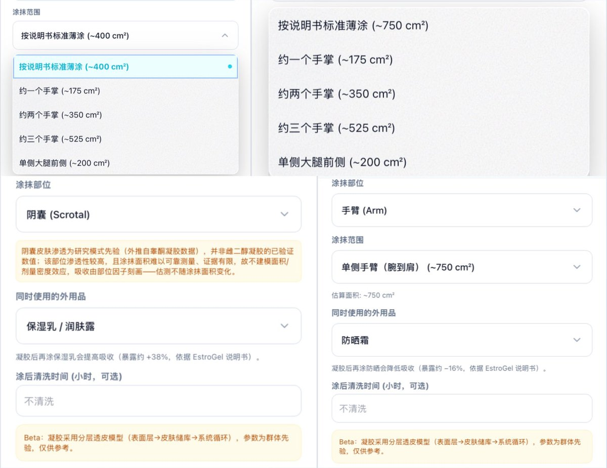

翅翅膀喵喵喵喵喵
@axzameyzed
RT @TeamTransmtf: 凝胶用药记录功能现已完成重要更新，涵盖涂抹面积快速选择、叠用产品优化及各部位估测优化等改进，旨在提升记录效率与数据准确性，欢迎体验（完整更新报告见Telegram通知频道）

Team Transmtf
@TeamTransmtf
凝胶用药记录功能现已完成重要更新，涵盖涂抹面积快速选择、叠用产品优化及各部位估测优化等改进，旨在提升记录效率与数据准确性，欢迎体验（完整更新报告见Telegram通知频道） https://t.co/ZEfm4jRAio